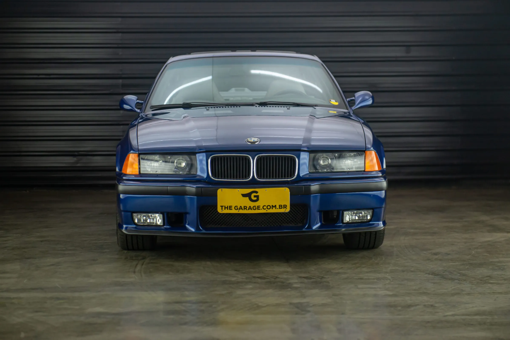
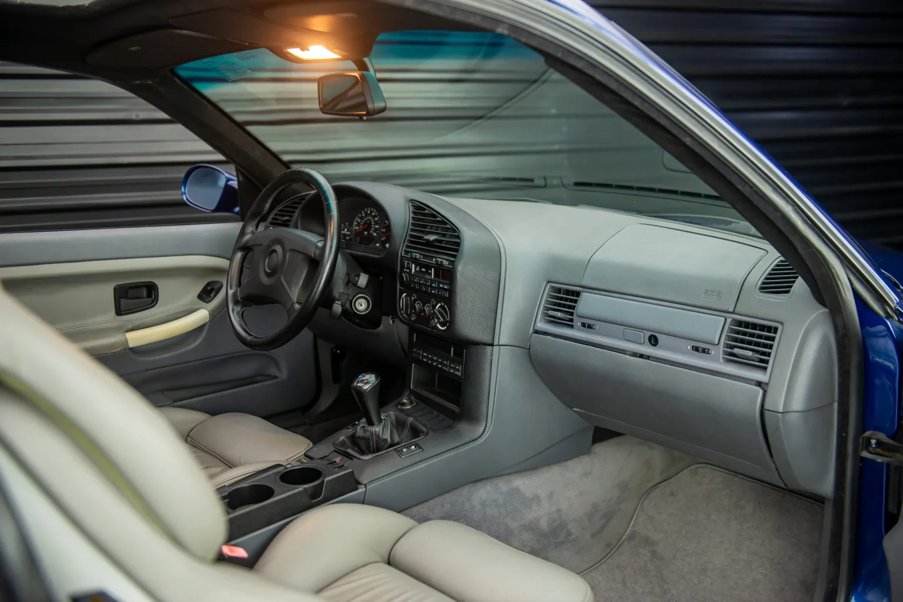
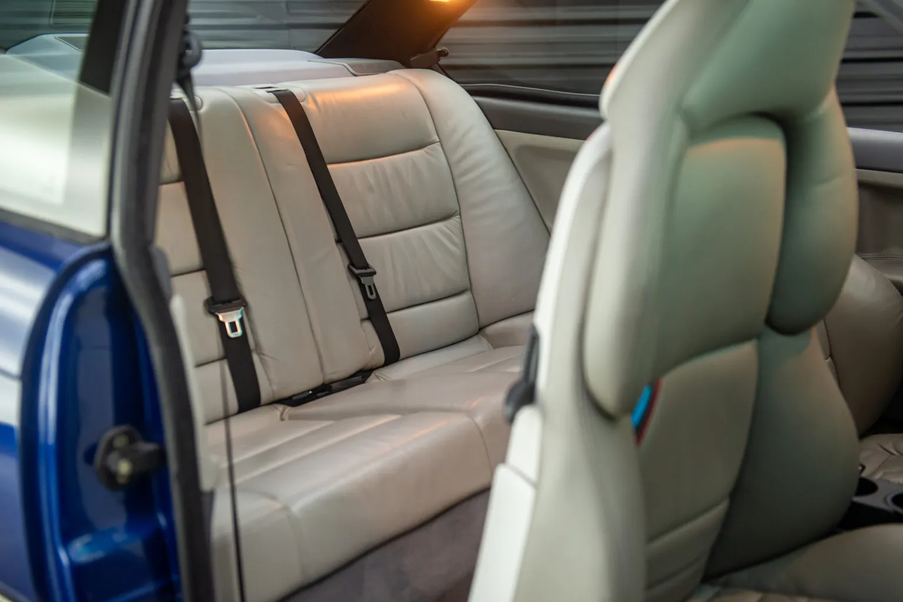
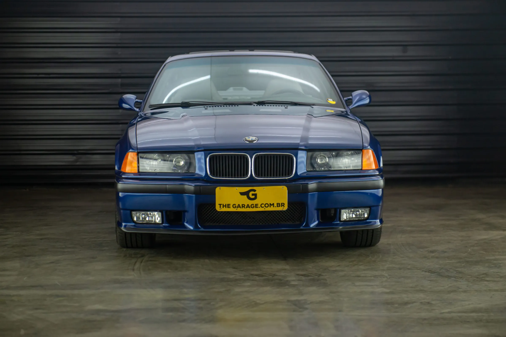
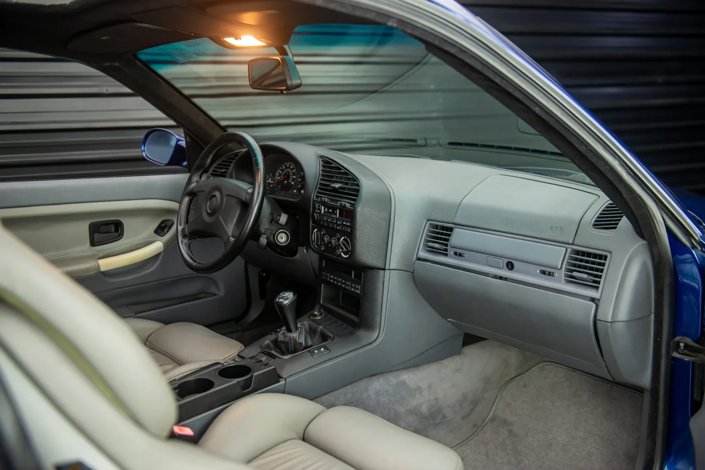
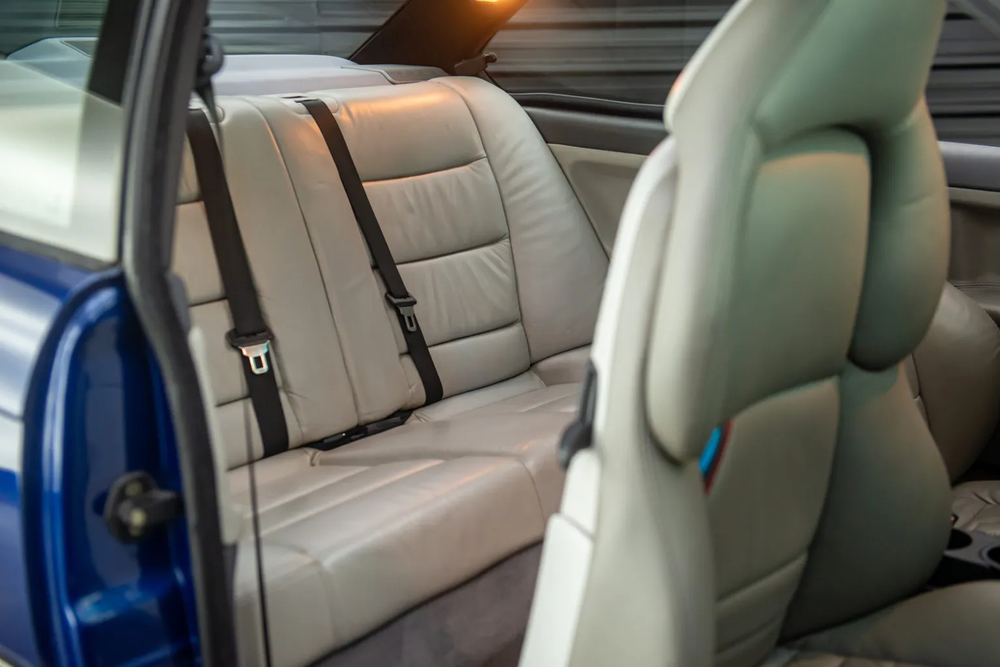

BMW
A BMW M3 de 1995, um ícone da engenharia automotiva, representa um marco na história dos carros esportivos, combinando desempenho de alta octanagem com a sofisticação característica da marca alemã. Equipado com o lendário motor S50, um seis cilindros em linha de 3.0 litros, este modelo entregava impressionantes 286 cavalos de potência, permitindo acelerações vigorosas e uma velocidade máxima de 250 km/h, limitada eletronicamente. A relação de peso-potência, um dos principais atributos do M3, proporcionava uma dirigibilidade excepcional, enquanto o chassi bem equilibrado, juntamente com a suspensão esportiva, garantiam uma resposta ágil e precisa nas curvas. A transmissão manual de cinco velocidades, um deleite para os entusiastas da direção, oferecia trocas de marcha suaves e rápidas, destacando-se em circuitos e estradas sinuosas. Visualmente, a M3 de 1995 exibia um design robusto e aerodinâmico, com linhas agressivas e detalhes que destacavam sua natureza esportiva, como os para-lamas alargados, rodas de liga leve e o icônico spoiler traseiro. O interior combinava luxo e funcionalidade, com bancos esportivos revestidos em couro, painel de instrumentos de fácil leitura e controles ergonomicamente posicionados, criando um ambiente focado no motorista. Além disso, a M3 1995 não se destacava apenas pela performance, mas também pela tecnologia embarcada, como freios ABS, controle de tração e sistemas de segurança avançados para a época. Este modelo também foi um sucesso nas pistas de corrida, com várias vitórias em competições internacionais que solidificaram sua reputação como um dos melhores carros de desempenho de sua geração. Sua herança continua a influenciar os designs dos modelos M3 subsequentes, mantendo um legado que ressoa entre os aficionados por carros ao redor do mundo. Em resumo, a BMW M3 de 1995 é mais do que apenas um carro; é um símbolo de excelência em engenharia automotiva, combinando potência, precisão e elegância em uma máquina que definiu padrões para os veículos de alto desempenho, permanecendo até hoje como um dos modelos mais respeitados e desejados da história da indústria automobilística.
 






Para adquirir o veiculo, nos contate no whatsapp (11) 9 5681-9861